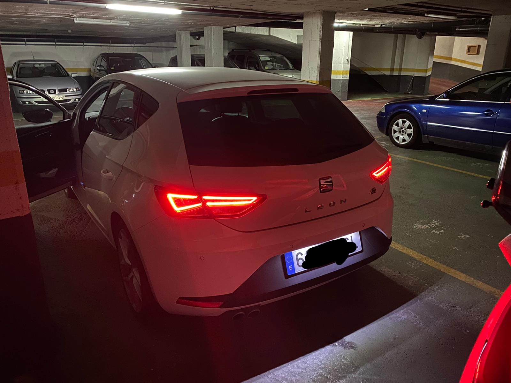
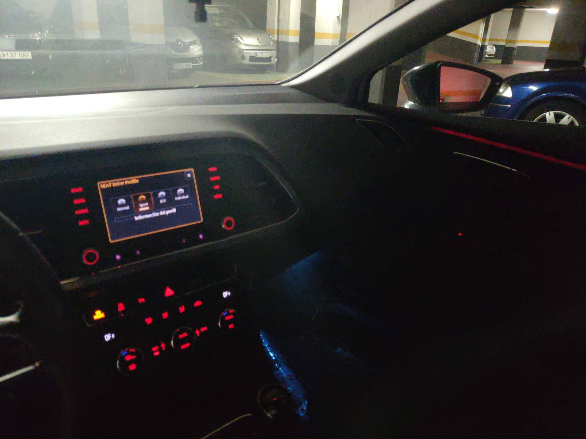
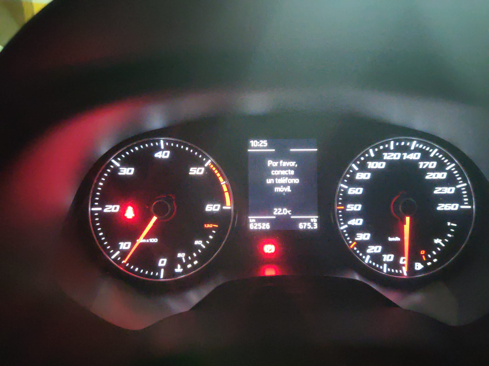
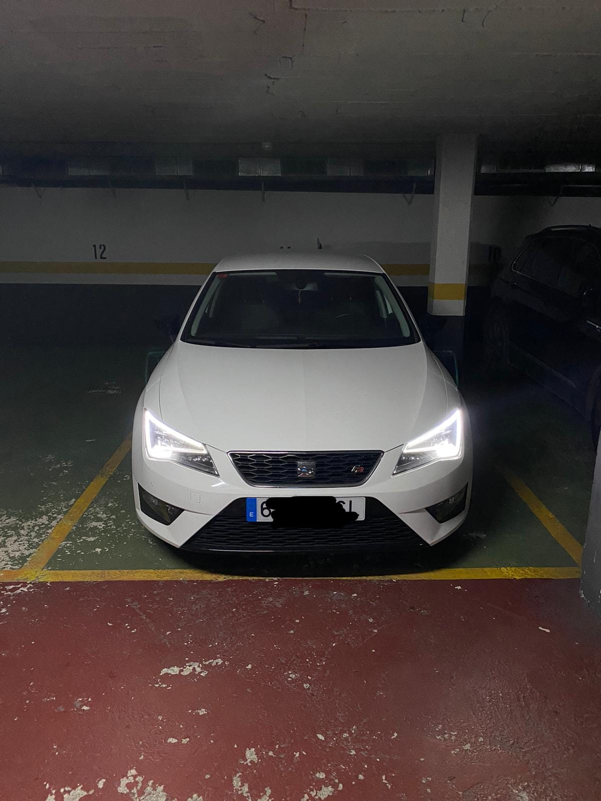
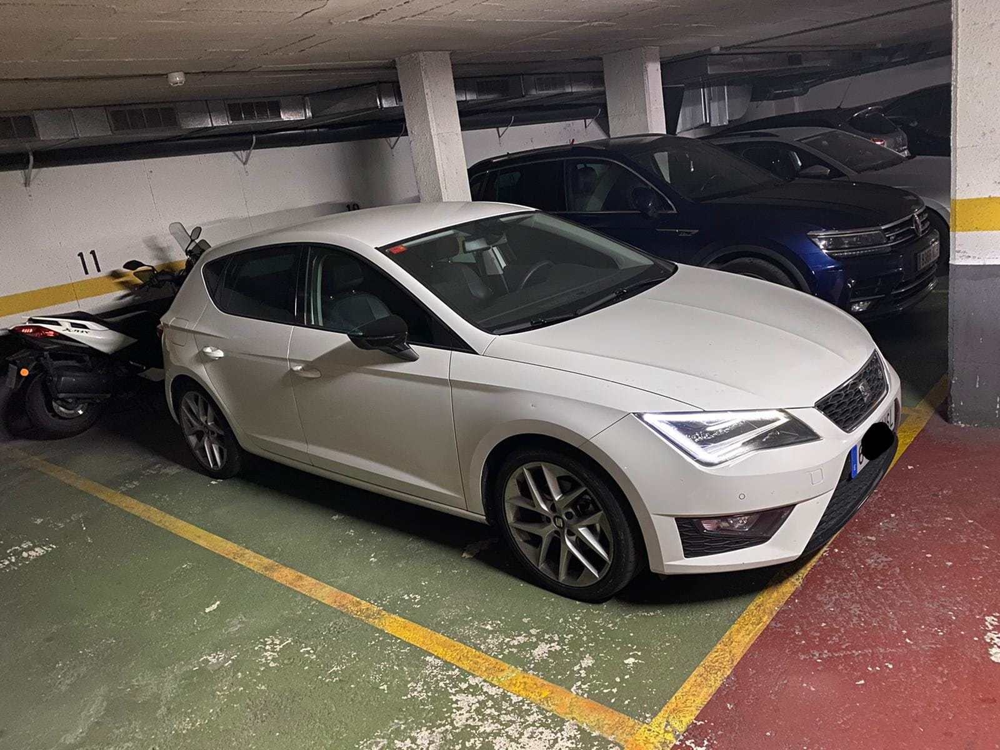
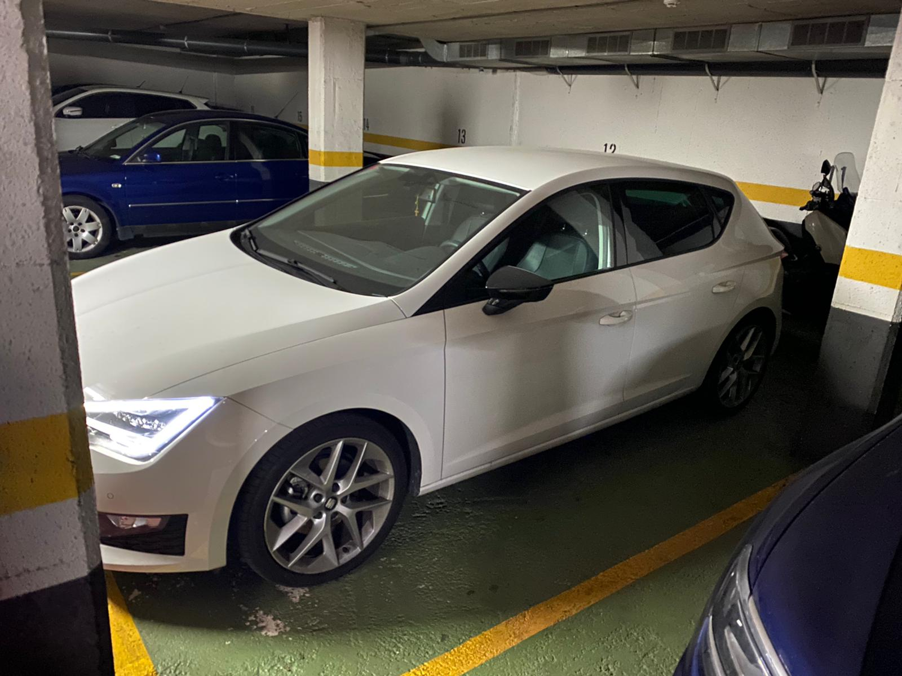

Seat Leon FR 2.0 TDI 150CV 62.000KM 2013
12.750€
Extras:
- Full Led
- Cajones bajo asiento
- Sensor parking delante y detras, con representación visual en pantalla.
- 10 altavoces
- Pantalla 5.8"
- Luces, limpiparabrisas, retrovisor interior Automaticos
- Llantas 18"
Tiene un consumo muy contenido para la potencia que entrega
La ultima noviembre en concesionario oficial SEAT.
Esta todo al dia hasta la siguiente revision (+30.000km)
Comprar y disfrutar.
Fotos:





